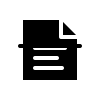

harnessNovel中文小说创作工作台
展开的书被一条水平结构组织起来。只保留 harness 与 Novel 两个核心含义，中央书脊隐约形成 H。
第三轮依据 Logo Generator 的极简原则完成：1–2 个核心元素、充足负空间、单色 SVG，以及 31px 导航栏实景检验。HAN/汉只保留为隐含设计逻辑。
展开的书被一条水平结构组织起来。只保留 harness 与 Novel 两个核心含义，中央书脊隐约形成 H。
基于统一网格重绘“三点水”与“又”的骨架。笔画、圆角和间距完全统一，保留汉字识别度，同时避免直接使用字体字形。
四条叙事线从同一源头展开、交汇并收束。表达多轮生成和故事线编织，不使用书本或笔尖。
离散章节单元围绕中央主线排列。缺失的中心空间让图形保持呼吸，也暗示内容仍在生成。

稿纸、折页和贯穿式束带构成稳定图形。更偏写作生产工具，适合产品界面和桌面应用图标。
素材、情节和章节汇入核心，再展开为不同成品。非对称节点让工具属性更明显。